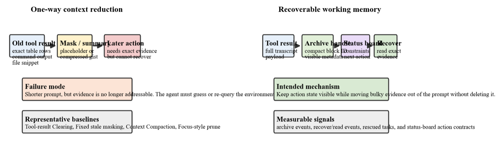
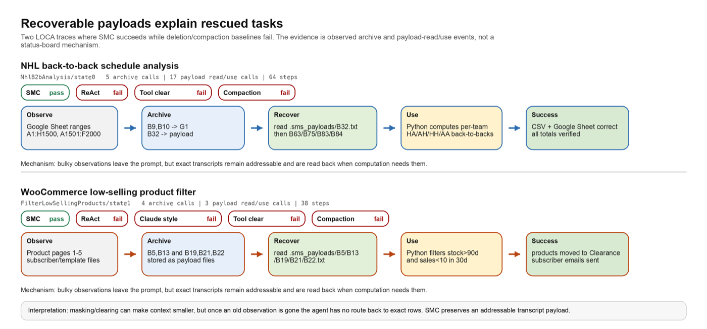

Typed Blocks
Conversation, tool calls, file reads, and derived state become addressable workspace blocks.
arXiv 2026
Eliciting self-managed context via a proprioceptive dashboard.
Long-horizon tool agents are bottlenecked by how their context grows toward the limits of the context window. VISTA represents working memory as typed, addressable blocks, surfaces runtime state through a dashboard, and archives blocks as recoverable full-fidelity payloads. The same untrained interface transfers across LOCA-Bench, BrowseComp-Plus, and GAIA.

Conversation, tool calls, file reads, and derived state become addressable workspace blocks.
The model sees token usage, recency, access history, and context pressure before acting.
Archived blocks are moved out of the active window without destroying full-fidelity evidence.
VISTA does not train a compression policy. It gives a capable model a lightweight control surface for deciding what should stay visible, what should be archived, and what should be recalled later.




git clone git@github.com:binyxu/VISTA.git
cd VISTA
cp .env.example .env
# edit .env with LOCA_OPENAI_API_KEY and LOCA_OPENAI_BASE_URL
bash run_loca_self_managed.sh@article{xu2026vista,
title = {LLM Agents Are Latent Context Managers: Eliciting Self-Managed Context via a Proprioceptive Dashboard},
author = {Xu, Binyan and Li, Haitao and Zhang, Kehuan},
journal = {arXiv preprint arXiv:2606.30005},
year = {2026}
}